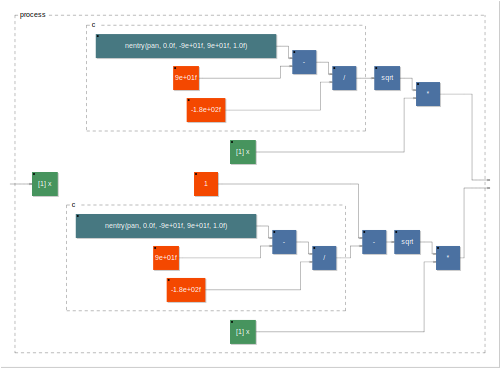

spat
panpot

declare name "panpot";
declare version "1.0";
declare author "Grame";
declare license "BSD";
declare copyright "(c)GRAME 2006";
//-------------------------------------------------
// Stereo panpot
//-------------------------------------------------
panpot(x) = sqrt(c)*x, sqrt(1-c)*x
with {
c=(nentry("[1]pan[style:knob]",0,-90,90,1)-90.0)/-180.0;
};
process = panpot;
spat
declare name "spat";
declare version "1.0";
declare author "Grame";
declare license "BSD";
declare copyright "(c)GRAME 2006";
//==========================================================
//
// GMEM SPAT
// implementation of L. Pottier Spatializer
//
//==========================================================
import("stdfaust.lib");
//------------------------------------------------------
// EXEMPLE : une entree mono spatialisee sur 8 sorties
//------------------------------------------------------
angle = hslider("angle", 0.0, 0, 1, 0.01);
distance = hslider("distance", 0.5, 0, 1, 0.01);
process = vgroup("Spatializer 1x8", sp.spat(8, angle, distance));